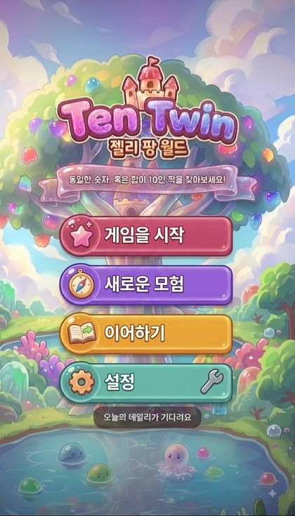
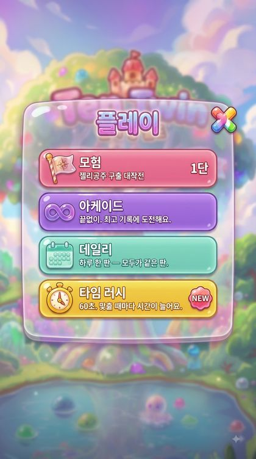
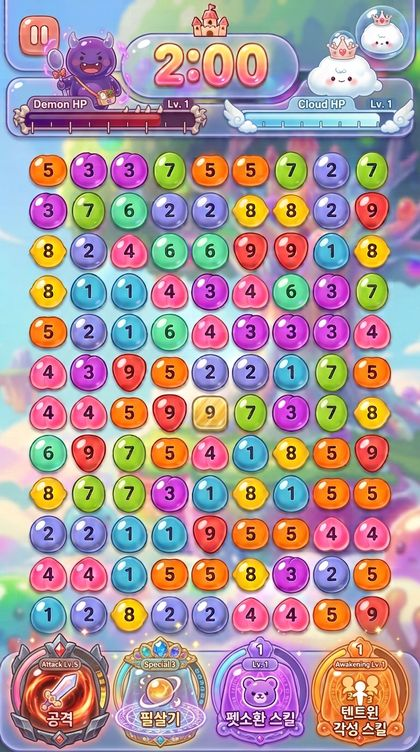

| 라벨 | 값 | 출처 |
|---|---|---|
| 1호 장르 | 숫자 짝 맞추기 퍼즐 (Number Match 벤치마크) | DESIGN.md |
| 세계관 | 젤리팡 세계 「젤리공주 구출 대작전」 — 텐텐/트윈 왕자(규칙 의인화)·보스전 | MASTER-PLAN.md 개정이력(v4) |
| 단계 | 내용 | 출처 |
|---|---|---|
| 1 | 9열 보드에 숫자 1~9가 행 우선으로 채워짐 | DESIGN.md §1 |
| 2 | 두 셀이 같은 숫자이거나 합이 10이면 매치 조건 성립 | DESIGN.md §1 |
| 3 | 가로/세로/대각선 일직선 또는 읽기순서 연속(사이에 살아있는 셀 없음)이면 연결 | DESIGN.md §1 |
| 4 | 매치 성공 → 두 셀 소거(crossed), 한 행 전체 소거 시 행 붕괴 | DESIGN.md §1 |
| 5 | Add(+) 버튼으로 남은 숫자를 보드 꼬리에 복제 추가(횟수 제한) | DESIGN.md §1 |
| 6 | 보드 전부 소거 → 다음 스테이지(시드 난이도 상승). 막힘+Add 소진 → 게임오버 | DESIGN.md §1 |
| 콤보 | 5초 내 연속 매치 시 배수 x2~x8, 콤보 x4 도달 시 10초 피버(점수 2배) | DESIGN.md §2·§9-FUN B |
| 모드명 | 규칙 | 출처 |
|---|---|---|
| Endless | 스테이지 무한 진행, 시드 난이도 상승 | DESIGN.md §5 |
| Daily | 하루 1퍼즐, 고정 시드(YYYYMMDD), Add 3회 고정, 특수타일 없음(전세계 동일) | DESIGN.md §5·§9-FUN F |
| 타임 러시(Time Rush) | 90초 카운트다운, 매치마다 +2초, 특수타일 확률 2배, Add 무제한(쿨다운 8초) | DESIGN.md §9-FUN D |
| 어드벤처(Adventure) | 100탄/10챕터 스토리 전투 — 캐릭터·펫·보스·각성 게이지가 붙는 전용 모드 | GAME-CONTENT.md §5 · PET-SYSTEM.md |
| 클래식(Classic) | 순수 규칙 판(캐릭터 패시브 오프) — classic-daily는 완전 순수 | DESIGN-ITEMS.md · PET-SYSTEM.md §6.3 |
| 단계 | 값 | 출처 |
|---|---|---|
| 1단계(현행) | itch.io·GitHub Pages 무료 배포 — 과금 0·광고 0. 목적은 노출·검증·피드백 | MASTER-PLAN.md §3-B |
| 2단계 | 앱(구글 플레이→앱스토어) 애니팡류 보편 모델 — 보석·게임 토큰·별 모으기, 하트 리필·스킨·광고 제거 IAP + AdMob | MASTER-PLAN.md §3-B |
| 포털 광고 분배 | CrazyGames 광고 60%·IAP 70% / Poki (포털 제출 시 상업적 이용 = 법무 분기 재통과 필요) | MASTER-PLAN.md §3·부록 |
| 추가 축 | 사용권(라이선스) 반복 판매 / 코스메틱(스킨·아이템) — 웹은 별(★) 무료화폐, 앱은 실화폐 전환 | MASTER-PLAN.md §3·개정이력 2026-08-11 |
| 라벨 | 값 | 출처 |
|---|---|---|
| 제출 경로 | CrazyGames 셀프 제출 → Poki Playtest | DESIGN.md 상단 |
| UI 언어 | 영어 UI(i18n ko/en 대칭) | DESIGN.md 상단 |
| 기기 | 모바일 세로 우선 + 데스크톱 대응 | DESIGN.md 상단 |
| 유저상 | 한국 캐주얼 기준 — 쨍한 색감·시간 압박·N탄 진행감·하트/랭킹 경쟁 | MASTER-PLAN.md 부록 |
| 라벨 | 값 | 출처 |
|---|---|---|
| 구조 | 순수 HTML/CSS/JS 단일 페이지 | DESIGN.md 상단 |
| 외부 리소스 | 0 — 폰트·이미지·오디오 전부 인라인/생성 | DESIGN.md 상단 |
| 사운드 | WebAudio 오실레이터/노이즈 신스로 전량 생성(외부 파일 0) | DESIGN.md §3 |
| 저장 | localStorage(이어하기·별·스킨·하트) — try/catch + 인메모리 폴백(private-mode safe) | DESIGN.md 상단 · MASTER-PLAN.md 저장 로드맵 |
| 렌더링 | 60fps 필수 — 파티클 단일 canvas 오버레이 + 오브젝트 풀링, CSS transform/opacity만, rAF 단일 루프 | DESIGN.md §3 |
| 훅 | 화면명 | 종류 | 타깃 요소 | 진입 | 나감 |
|---|---|---|---|---|---|
| menu | 메인 메뉴 | 화면 | #screen-menu | 앱 시작(스플래시 통과·튜토리얼 종료 후) | play / character / settings / map(openMap) |
| play | 플레이(모드 선택) 모달 | 모달 | #modal-mode (btn-play) | menu 의 #btn-play | map / game (모드 선택) |
| character | 캐릭터 선택창 | 화면/패널 | #charpanel (char-open) | menu 의 #char-open | skin (cp-skin) |
| skin | 스킨 모달 | 모달 | #modal-skin (cp-skin) | charpanel 의 #cp-skin | charpanel |
| settings | 설정 모달 | 모달 | #modal-settings (btn-settings) | menu 의 #btn-settings | records / howto |
| records | 기록·랭킹 모달 | 모달 | #modal-rank (st-rank) | settings 의 #st-rank | settings |
| howto | 게임 방법 모달 | 모달 | #modal-howto (st-howto) | settings 의 #st-howto | settings |
| story | 스토리 컷 뷰어 | 화면 | #screen-story (playCuts) | playCuts(CUTS_OPEN) 재생 | map |
| map | 스테이지 맵 | 화면 | #screen-map (openMap) | menu/play → openMap | stageinfo (map-cur) |
| stageinfo | 노드(스테이지 정보) 카드 | 모달 | #modal-node (map-cur / openNodeCard) | map 의 #map-cur | game (node-go) |
| game | 인게임(전투·보드) | 화면 | #screen-game (node-go) | stageinfo 의 #node-go | pause / clear / over |
| pause | 일시정지 모달 | 모달 | #modal-pause (btn-pause) | game 의 #btn-pause | game (재개) |
| clear | 스테이지 클리어 모달 | 모달 | #modal-adv (onStageClear) | game 의 onStageClear | map (다음 노드) |
| over | 게임 오버 모달 | 모달 | #modal-adv (onGameOver) | game 의 onGameOver | map / game(리트라이·이어하기) |
| from | → | to | 경유 |
|---|---|---|---|
| menu | → | play | #btn-play → modal-mode |
| menu | → | character | #char-open → charpanel |
| menu | → | settings | #btn-settings → modal-settings |
| menu | → | map | openMap() |
| play | → | map | 모드 선택 후 |
| character | → | skin | #cp-skin → modal-skin |
| settings | → | records | #st-rank → modal-rank |
| settings | → | howto | #st-howto → modal-howto |
| story | → | map | 컷 재생 종료 |
| map | → | stageinfo | #map-cur → modal-node |
| stageinfo | → | game | #node-go → screen-game |
| game | → | pause | #btn-pause → modal-pause |
| game | → | clear | onStageClear() → modal-adv |
| game | → | over | onGameOver() → modal-adv |
| clear | → | map | 다음 노드로 복귀 |
| over | → | map | 메뉴/맵 복귀 |
| 스탯 | 영향 | 체감 |
|---|---|---|
| 폭발력(Power) | 한 방 점수·데미지 배율(콤보 티어 점수 보너스) | 큰 거 한 방 |
| 꾸준함(Steady) | 시간당 안정 획득·피해 감소 | 안 죽는다 |
| 순발력(Agility) | 게이지 적립 속도·쿨다운 | 기관총 상태 진입이 빠름 |
| 행운(Luck) | 특수 타일·좋은 배치 확률 | 판이 잘 풀린다 |
| id | 이름 | 역할 | 편중 | 액티브 | 파워 등급 | 실장 |
|---|---|---|---|---|---|---|
| ppyak | 뽀약/삐약(병아리) | 시간 | 꾸준함 | 타임스톱 | 강(충전 2×) | 17차 1차 |
| mungchi | 뭉치(구름) | 확정 | 폭발력 | 확정 터트리기 5(유효쌍 확정팝) | 강(충전 2×) | 17차 1차 |
| mukmul | 먹물 문어 | 변환 | 폭발력 | 리페인트(숫자값 변경) | 강(충전 2×) | 17차 1차 |
| ttorok | 또록이(가칭) | 기억/복원 | 순발력 | 쾅셔플·바꿔치기 직후 3초 복원(평시 힌트 1회) | 중 | 18차 2차 |
| bangul | 방울이(가칭) | 정화/시야 | 순발력 | 거품 파도(끈끈이·먹구름 정화) | 중 | 18차 2차 |
| kkultteok | 꿀떡벌(가칭) | 행운/경제 | 행운 | 황금 열매 1개 소환(점수+게이지+별 조각) | 소~중 | 17차 1차 |
| ttakji | 딱지(가칭) | 방어 | 꾸준함 | 5초 방어막(기믹·대전공격 1회 무효) | 중(대전축) | 18차 2차 |
| mukmul-b | 자매펫(파랑 먹물) | 합10 변환 | 폭발력 | 합10 리페인트(텐텐 대칭) | 강(충전 2×) | 균형 예약 |
| banjjak | 반짝이(가칭) | 점화/승격 | 폭발력(또는 행운) | 빛 점화(일반 열매 → 빛나는 열매 등급 승격) | 강(충전 2×) | 17차 검토/기본 18차 |
| (미배정) | 자유 연결 트리거 펫(10번째 예약) | 길 트기/기하 완화 | 순발력 또는 행운(권고) | 자유 연결(connFree 창 즉발) | 강(충전 2×) | 엔진 14차 / 펫 트리거 UI 17차 |
| 라벨 | 값 | 출처 |
|---|---|---|
| 파워 예산 | 액티브 1회 기대가치 ≤ 판 평균 점수의 8~12% (강계열은 충전 비용 2배) | PET-SYSTEM.md §16-B |
| 판당 사용 | DUEL_PET_MAX=2 (펫과일로 MK_PET_CAP=4까지) | DESIGN-PET-GROWTH.md §0 |
| 파편 통화 | store.shards{power,steady,agility,luck} 4색 | DESIGN-PET-GROWTH.md §0 |
| 펫 해금 | PET_SHARD_NEED=300 누적 획득 자동해금(차감 없음) | DESIGN-PET-GROWTH.md §0 |
| 적용 범위 | 펫 스킬 = 배틀(어드벤처) 전용 — 데일리·클래식엔 lv 성장 미도달 | DESIGN-PET-GROWTH.md §0 |
| 라벨 | 값 |
|---|---|
| PET_LV_MAX | 20 |
| PET_EVO_MAX | 3 (evo 0→1만 설계, evo 2·3은 스키마 예약) |
| store.pets=[{id,lv,evo}] | petsVer=2 (makePetEntry 기본 lv1) |
| 펫 | lv1 | lv20 | 곡선 | 상태 |
|---|---|---|---|---|
| 몽글 | 4000ms | 6000ms | +≈105ms/lv | ★성장(승인) |
| 반짝 | 40%p | 48%p | +≈0.42pp/lv | ★성장(승인) |
| 먹물 | 5칸 | 6칸(lv14→6) | 1스텝 | ○판정 보류(심 결함 재스윕) |
| 추릅 | 1행 | 2행(lv20→2) | 1스텝 | ○판정 보류 |
| 꿀떡 | 2개 | 2개(3개 철회) | 평탄(완성★) | base 압도 1위 → 곡선 평탄 |
| 방울 | 2개 | 3개(lv16→3) | 1스텝 | 측정 미성립·보류 |
| 삐약 | 8000ms | 9000ms(추정) | +≈53ms/lv | △준평탄·보류 |
| 뭉치·째깍·썩싹 | 천장 | 천장 | 평탄 | ✕완성★ 표기 |
| 라벨 | 값 | 출처 |
|---|---|---|
| 만렙 목표 | 1펫 만렙 ≈ 60~80판 (권고안 B: 색 잠금 해제·만렙 총비용 240~320) | DESIGN-PET-GROWTH.md 3차판정 |
| 파편 획득 | 보드 스폰→수확, SHARD_RATE=0.10, MK_SHARD_MAX=2 | DESIGN-PET-GROWTH.md §0 |
| spend 경로 | 강화 소비(차감) 코드 미구현 — 신규 배관 필요 | DESIGN-PET-GROWTH.md §0 |
| 도약 | 대상 펫 | 조건 |
|---|---|---|
| +1 use (2→3회) | 뭉치·째깍·삐약·몽글·방울 | lv==20 && 우세색 파편 150(추정) |
| 축 점프 | 추릅 1→2행 · 꿀떡 2→3 · 먹물 5→6칸 · 반짝 +5%p | 미작성 |
| 챕터 | 탄 | 무대 | 기믹 | 보스 | 난이도 축 |
|---|---|---|---|---|---|
| 1 | 1–10 | 젤리 숲 | 기본(텐·트윈 배우기·튜토리얼 미션) | 포도 먹깨비(10탄) | 입문 |
| 2 | 11–20 | 거품 강 | 얼음 타일 | 소다 먹깨비(20탄) | 기믹 소개 |
| 3 | 21–30 | 사탕 폐허 | 블로커 증가 | 딸기 먹깨비(30탄) | 응용 |
| 4 | 31–40 | 박하 언덕 | 판 흔들림 | 박하 먹깨비(40탄) | 속도 압박 |
| 5 | 41–50 | 초코 관문 | 잠금 타일 | 초코 대왕(50탄) — 강제 패배 각본 | 1차전 후퇴 |
| 6 | 51–60 | 크림 회랑 | 폭탄 타일 | 포도 먹깨비(강화·60탄) | 재상승 |
| 7 | 61–70 | 시럽 미로 | 와일드 등장 | 소다 먹깨비(강화·70탄) | 변화 |
| 8 | 71–80 | 설탕 감옥 | 시간 단축 | 딸기 먹깨비(강화·80탄) | 시간 압박 |
| 9 | 81–90 | 심장의 방 | 복합 기믹 | 박하 먹깨비(강화·90탄) | 고비 |
| 10 | 91–100 | 왕좌 | 전부 | 초코 대왕(진·100탄) 최종 재대결 | 종합 |
| 라벨 | 값 |
|---|---|
| 챕터 내 리듬 | 1~2탄 새 기믹 소개(튜토리얼) / 3~5탄 익히기(완만) / 6~7탄 응용(기믹 2개 조합) / 8~9탄 고비(최고 난도) / 10탄 보스+피니시 미션 |
| 보스 순환 | 10·60 포도 / 20·70 소다 / 30·80 딸기 / 40·90 박하 / 50·100 초코 대왕 (5종 순환 = 50탄까지 같은 보스 없음) |
| 보스 HP 곡선 | 기본치 × (1 + 0.08 × 챕터번호)² — 플레이어 선형 성장보다 빠르게 상승 |
| 탄 | 장치 | 출처 |
|---|---|---|
| 50 | 강제 패배 각본 — 초코대왕 첫 대면, DUEL_SCRIPT_HP=0.30 도달 시 무적 역전·컷인·강제 KO. 하트 미소모·advMax→51(각본 패배가 곧 진행) | DESIGN-MG-FINISH.md §2 |
| 보스 처치 | 피니시 시스템 — HP 0 → 시간정지 → 10초 타이머(DUEL_FINISH_MS=10000) → 피니시 미션(못 하면 클리어 실패) | DESIGN-MG-FINISH.md §3 · GAME-CONTENT.md §5-3 |
| 보스 | 미션 |
|---|---|
| 포도 | 텐 3번 |
| 소다 | 텐↔트윈 교차 3번 |
| 딸기 | 콤보 5 만들기 |
| 박하 | 10초 안에 5매치 |
| 초코 대왕 | 텐 5번 + 콤보 5 |
| ★ | 조건 |
|---|---|
| 1 | 스테이지 클리어 |
| 2 | 점수 1.2배 또는 피니시 미션 무실패 |
| 3 | 보스 취약 속성으로 마무리(포도를 텐으로 끝내기 등) |
| # | id | 이름 (ko) | 이름 (en) | 효과 | 분류 |
|---|---|---|---|---|---|
| 1 | ten | 왕자의 축복 | Prince's Blessing | 텐 매치(합 10) 점수 +40% | 캐릭터 |
| 2 | twin | 쌍둥이 맹세 | Twin Vow | 같은 숫자 매치 +60% | 캐릭터 |
| 3 | jelly | 공주의 온기 | Princess's Warmth | 10% 확률로 그 매치 ×2 | 캐릭터 |
| 4 | pudding | 푸딩 방패 | Pudding Guard | 적 공격 피해 −35%, 콤보 끊겨도 게이지 손실 없음 | 캐릭터 |
| 5 | sodawitch | 탄산 주문 | Fizzy Spell | 콤보가 끊겨도 1회 유지(2초 유예) | 캐릭터 |
| 6 | ppyak | 자유 연결 | Free Link | 떨어진 두 칸을 한 번 이어준다(거리 무시 1회) | 펫 |
| 7 | mungchi | 말랑 방패 | Squishy Shield | 방패 1회 — 다음 적 공격 무효화 | 펫 |
| 8 | mongle | 시간 웅덩이 | Time Puddle | 8초간 모든 점수 ×1.5 | 펫 |
| 9 | churup | 크게 한 입 | Big Bite | 체력 30 회복 + 3초간 피해 무효 | 펫 |
| 10 | mukmul | 잉크 물들이기 | Ink Splash | 화면의 블로커·잠금을 3개 지운다(리페인트 계열) | 펫 |
| 11 | tiktok | 타임 스톱 | Time Stop | 3초 정지 — 그동안 자유롭게 고른다 | 펫 |
| 12 | kkultteok | 황금 소환 | Golden Call | 임의 타일 4개를 숫자 5로 바꾼다 | 펫 |
| 13 | bangul | 거품 파도 | Bubble Wave | 최적 수 3개를 5초간 표시(정화/시야) | 펫 |
| 14 | sseokssak | 싹쓸이 | Clean Sweep | 한 열을 통째로 지운다(아래로 채워짐) | 펫 |
| 15 | banjjak | 번쩍 충전 | Spark Charge | 각성 게이지 +40%p 즉시 | 펫 |
| 화면 | 요구 요소 | 개수 |
|---|---|---|
| 메인 메뉴(menu) | 로고/타이틀 판 · Play(Endless) 버튼(#btn-play) · 이어하기 버튼(#btn-cont) · 캐릭터 버튼(#char-open) · 설정 버튼(#btn-settings) · Daily 🔥스트릭 배지 · 규칙 말풍선 리본(.tagline) · 사운드 토글 · 하단 배너 광고 플레이스홀더 | 9 |
| 게임 화면(game) | 상단바(스테이지·점수·베스트) · 콤보 인디케이터 · 9열 보드(뷰포트 맞춤) · 하단 액션바 Add(+배지)·Hint(배지)·Undo · 일시정지 버튼(#btn-pause) · 전투 HUD(타이머 캡슐·체력바·초상 방울·각성 게이지) | 6 |
| 스테이지 맵(map) | 뒤로 버튼(#map-back) · 설정 버튼(#map-gear) · 캐릭터 버튼(#map-char) · 기록 버튼(#map-rec) · 하트 필(#map-hearts) · 별/코인 필(#map-stars) · 챕터 판(#map-plate) · 노드 경로·별 표시(#map-path) · 현재 노드(#map-cur) | 9 |
| 노드 카드(stageinfo) | 스테이지 번호·챕터 · 미션/목표 표시 · 별 획득 상태 · 시작 버튼(#node-go) · 젤리판 모달 배경 | 5 |
| 캐릭터 선택창(character) | 캐릭터 레일·방울 줄 · 4스탯 게이지 바(base+펫 오버필) · 펫 슬롯 · 패시브 카드([패시브 스킬] 머리·아이콘칸·제목·본문·바닥줄) · 스킨 버튼(#cp-skin) · 젤리 정보판(하단) | 6 |
| 스테이지 클리어(clear) | 점수 집계 롤업 · 클리어 등급 S/A/B/C 배지 · 획득 별 · Next 버튼 · 3스테이지마다 전면 광고 플레이스홀더 | 5 |
| 게임 오버(over) | 점수·베스트 · 이어하기(보상형 광고 PH) · 리트라이 · 메뉴 | 4 |
| 일시정지/설정(pause/settings) | 사운드 토글 · 진동 토글(navigator.vibrate) · 재시작 · How to · 기록(st-rank)·게임방법(st-howto) 진입 | 5 |
| 스토리 컷 뷰어(story) | 컷툰 이미지 · 자막/보이스 · 재생·건너뛰기 | 3 |



| S# | 이름 | 대응 화면 | 정본 범위 | ASCII 사본 | 존재 확인 |
|---|---|---|---|---|---|
| S10 | 메인화면·버튼 | 메인 메뉴 + 버튼 | 기준 버튼 틀 실측 소스·타이틀 로고·리본 안내문 | tentwin/assets/sian-src/S10-main-buttons.png | 확인됨(디스크·OneDrive 양쪽) |
| S4 | 플레이 모달(스토리·게임 모드) | 플레이 모드 선택 모달 | 그림 버튼 4줄·배지·배치 | tentwin/assets/sian-src/S4-modal.png | 확인됨(디스크·OneDrive 양쪽) |
| S6 | 인게임 화면 | 전투 인게임(HUD·보드·스킬 메달) | 상단 HUD 조립·타이머 캡슐·체력바 뼈/날개·이름/Lv 탭·하단 스킬 메달 4 | tentwin/assets/sian-src/S6-ingame.png | 확인됨(디스크·OneDrive 양쪽) |
| S# | 이름 | 원본 파일 | 대응 화면 | 상태 |
|---|---|---|---|---|
| S1 | 게임 방법 조립본 | uploads/90127e38-image.png | 게임 방법 모달 | 보조(모달 판·제목 캡슐·버튼) |
| S2 | 제목 캡슐+글자 확대 | uploads/150b30d1-image.jpg | 제목 캡슐(공통) | 보조(글자·캡슐 색) |
| S3 | 판 코너+캡슐 왼끝 확대 | uploads/4c656724-image.jpg | 판/캡슐(공통) | 보조(겉선·림·광택) |
| S4 | 플레이 모달 완성본 | uploads/54aa2c15-image.png (고해상 1079×1949; 구 32f6be9b) | 플레이 모달 | 원본(sian-src) 우선·uploads 대체됨 |
| S5 | 캐릭터 선택창 | uploads/fffae90b-image.png | 캐릭터 선택창 | 보조(레일·방울 줄·게이지·정보판) |
| S6 | 상단 HUD 조립본(원본 승격) | uploads/4c1274ac-image.png / 원본 인게임 화면.png(768×1376) | 전투 HUD | 전투 HUD 조립 정본(2026-09-03 승격) |
| S7 | 상단 HUD 빈 틀 크로마 | uploads/a13c656f-image.png (+b1a9bfcd) / HUD-shape-chroma.png | 전투 HUD 실루엣 | 보조(판 2장·캡슐·방울 분해) |
| S8 | 전투 HUD 배포본 사진 | uploads/9920e80b-image.jpg | 전투 HUD | 위치 보조로 강등(색 기준 아님, 2026-09-03) |
| S9 | 젤리판 빈 판(정본) | uploads/faecc400-image.jpg | 모든 모달 판(재질·투명) | 정본(판 재질·색감 기준) |
| S11 | 젤리판 색·투명 정석 | 실기기 스크린샷 uploads/aa0a7479 + 코드 --cpj-* +S5 색 | 모달 판·캡슐 색/α/림/광 | 정석(2026-09-04 사용자 완벽한 색상·투명도) |